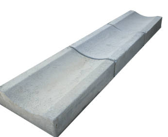

Precast Concrete Kerb Stones & Saucer Drains
Manufacturer of kerb stones and saucer drains for roads, footpaths, parking areas and drainage works in Panipat, Karnal and nearby locations.
Manufacturers & Infrastructure Development Contractors
Manufacturer & supplier of precast cement products including kerb stones, saucer drains and other CC precast items. Supply available across Panipat, Karnal, Samalkha, Sonipat, Kurukshetra, Delhi, Shamli and Muzaffarnagar.
We are R K Paver Blocks & Cement Products. We manufacture precast CC kerb stones and saucer drains for roads, streets, industrial areas, colonies and parking spaces.

If you need regular supply for projects in Panipat, Karnal, Samalkha, Sonipat, Kurukshetra, Delhi, Shamli and Muzaffarnagar, contact us for rates and availability.
Saucer drains help in surface water movement and reduce water logging. We supply precast saucer drains suitable for colonies, roadsides and industrial areas.
We supply kerb stones and saucer drains in:
Call: 9215715001
Email: rajendergoel@rkpaverblocks.in
WhatsApp: Click to WhatsApp
Yes. We manufacture precast concrete kerb stones at our factory and supply across Panipat, Karnal, Samalkha and nearby districts.
Kerb stones are used for road edging, footpath boundaries, parking areas and landscaping projects.
Yes. While kerb stones are used for edging and boundary marking, saucer drains are used for surface water drainage along roadsides and construction sites.
We supply concrete kerb stones in Panipat, Karnal, Samalkha, Sonipat, Kurukshetra, Shamli and nearby regions.
WhatsApp ↑ 📞 Call Now